System Operator Dashboard
Ticket List
Ticket Map
System Operator Admin
The System Operator Admin is the FuzionView System management interface.
Data Provider
The System Operator Dashboard is the Operational Interface for the System Operator. The Dashboard displays a list of all the Data Providers managed by the System Operator.
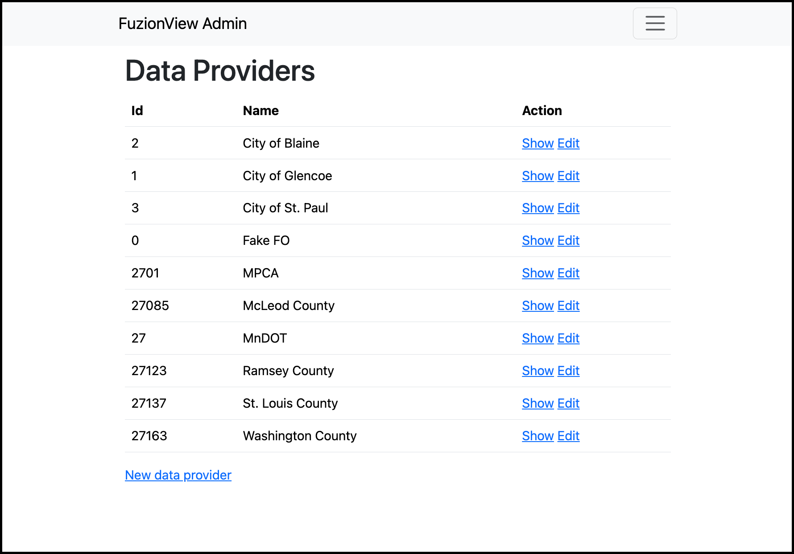
FuzionView System Operator Dashboard
Hint
Click Show to open the Data Provider or click Edit to change the name of the Data Provider.
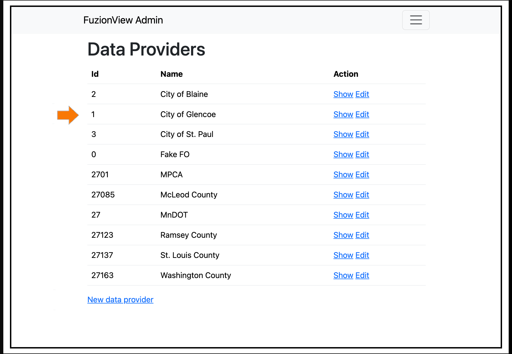
FuzionView System Operator Dashboard
Select New Data Provider to add a new data provider to FuzionView system.
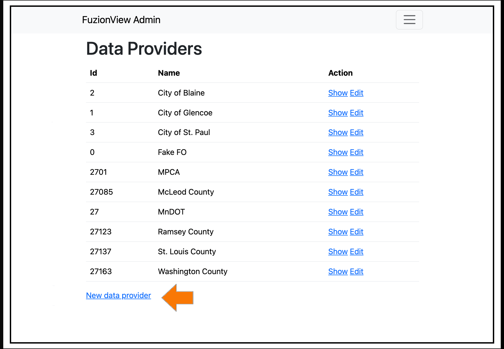
FuzionView System Operator Dashboard
Enter a name and click Submit to add a new data provider to FuzionView system.
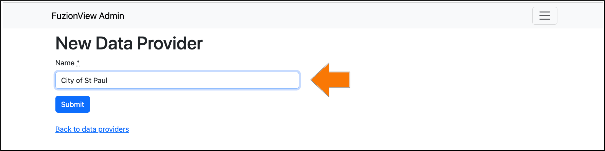
FuzionView System Operator Admin
System Settings
Use the menu to select System Operator Admin:
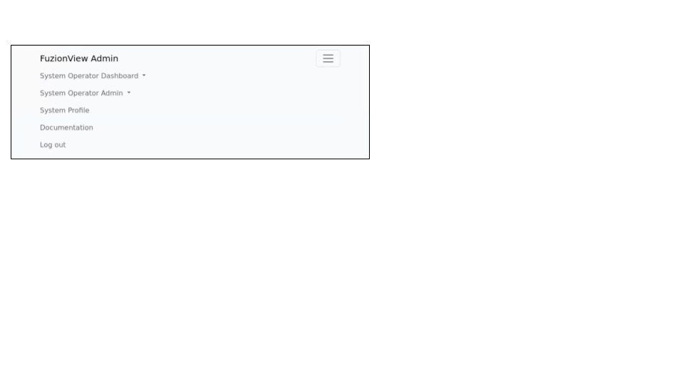
System Operator Admin Menu
Then select System Settings from the dropdown:
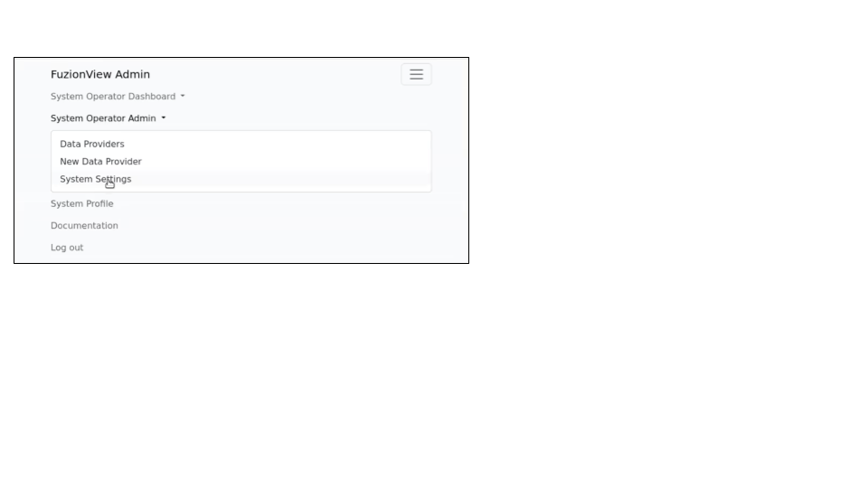
System Operator Admin Menu
The System Settings options are displayed:
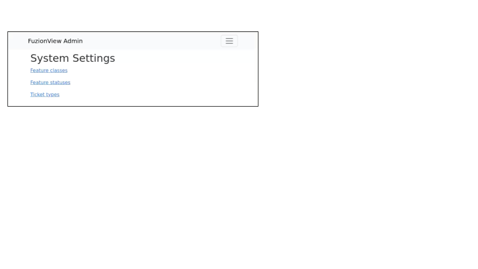
System Settings
Use the System Settings options to create and manage key database elements:
Feature Classes
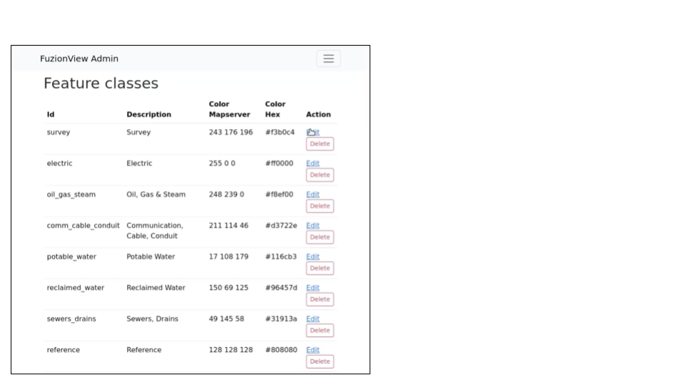
Feature Classes
Feature Classes are used to identify a feature category known as a LAYER in the Ticket Viewer. When a ticket has features in that layer, it is displayed in a specific color to identify them on the map.

Feature Class Layers
Scroll to the bottom and select Add New Feature Class to identify a new feature category.
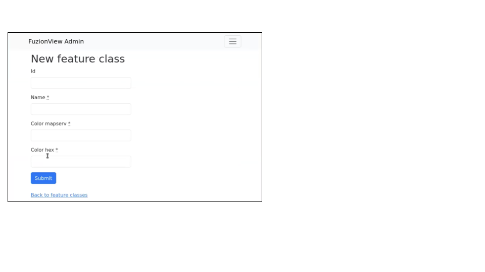
Add Feature Class Layers
A confirmation message will display when complete:
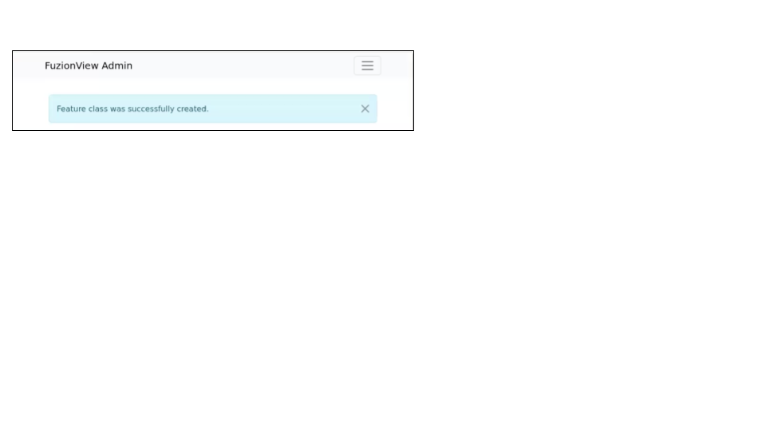
New Feature Class Created
Feature Statuses
Status is used to indicate whether the feature is in use and in what state of development it is.
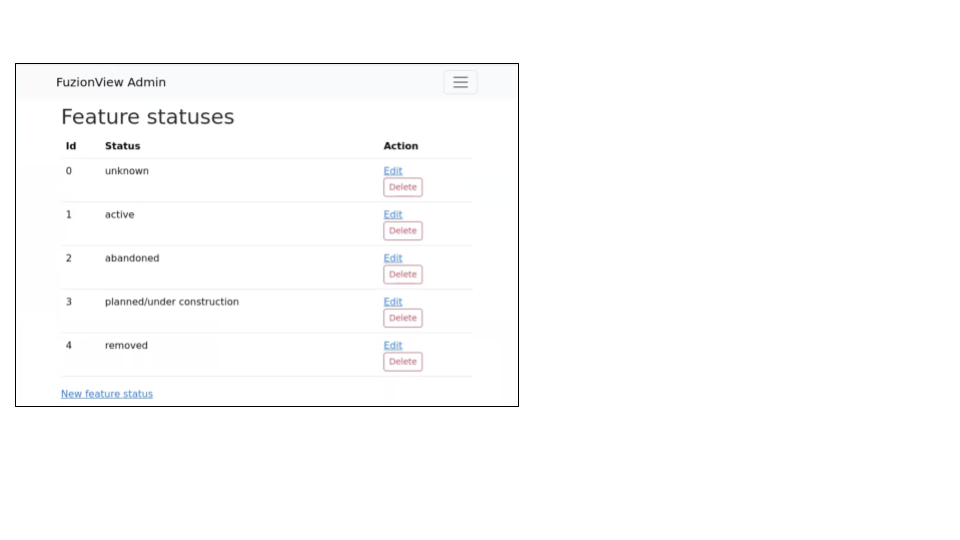
Add Feature Statuses
Scroll to the bottom and select Add New Feature Status to identify a new usage status:
Add Feature Status - Placeholder
Ticket Types
The ticket type is used to visually indicate the urgency of a ticket, which is used in planning response time.
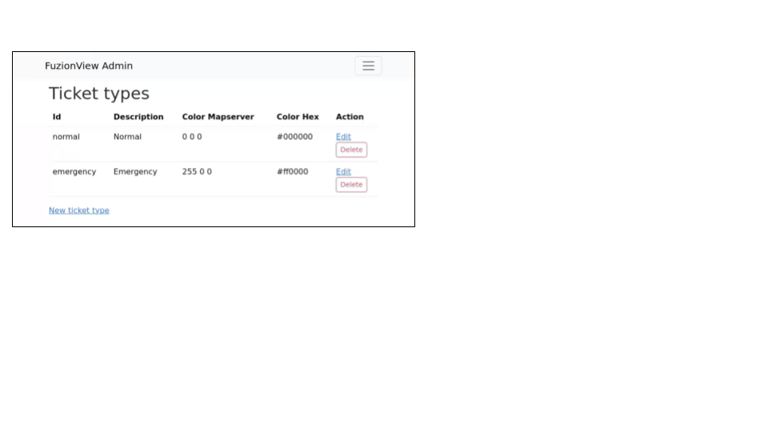
Ticket Types
The current options are Normal and Emergency. Emergency tickets display with the ticket number in red.
Ticket Types Placeholder
Scroll to the bottom and select New Ticket Type to add a new level of urgency.
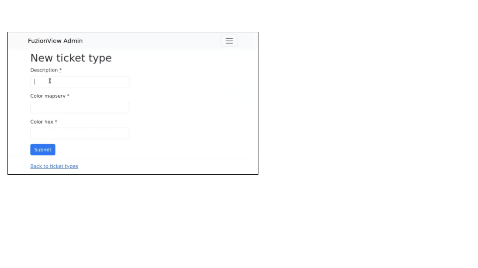
New Ticket Type